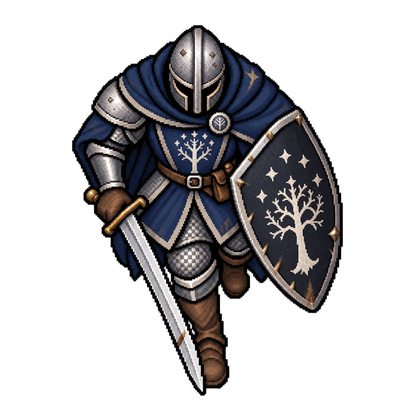
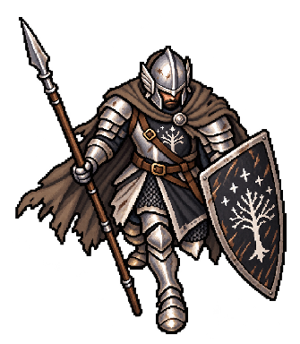
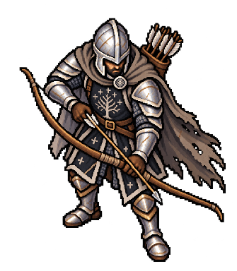

오스길리아스 베테랑 검방


새 병력은 보너스를 반영한 완전한 체력·자원으로 합류하고, 공통 훈련을 이어받습니다. 병사는 참전·생존으로 3단계 숙련을 얻습니다.
| 숙련 | 참전 | 우루크 상대 결투 승률 |
|---|---|---|
| 신병 | 0회 | 52.55% |
| 숙련병 | 2회 | 65.60% |
| 노련병 | 4회 | 73.25% |
| 백전병 | 8회 | 82.40% |
평지·동일 편성의 1회 결투 판정을 각 2,000회 비교한 수치이며, 전체 전투 승률은 아닙니다. 변경 전후 상세 보고서



